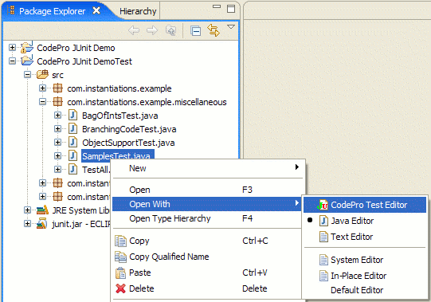
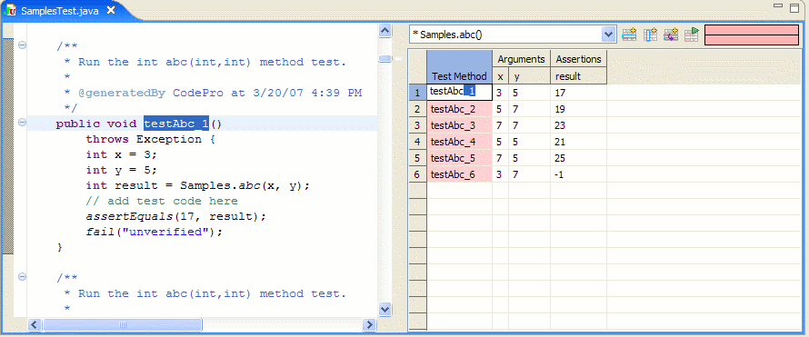
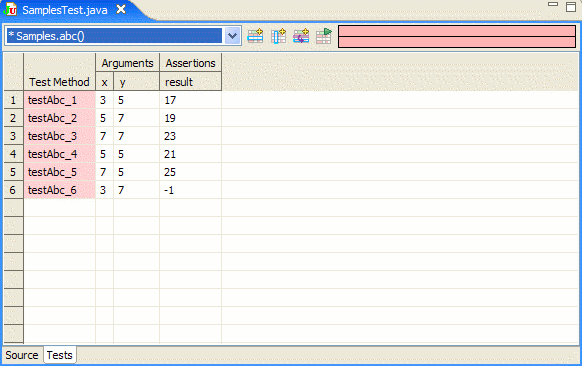
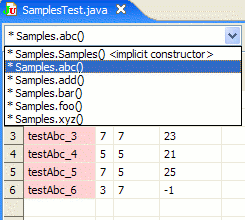
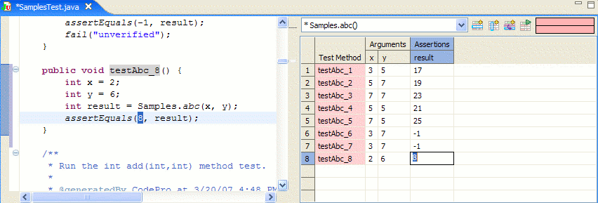
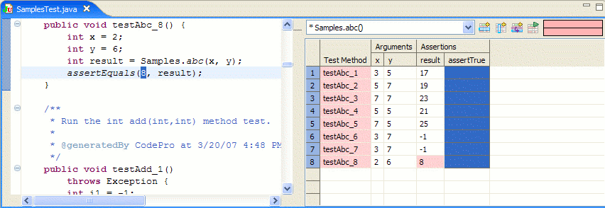
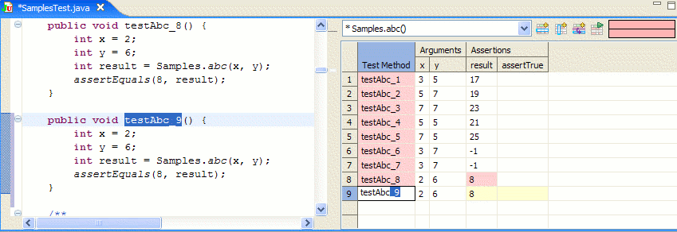
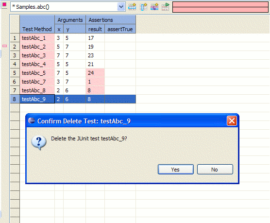
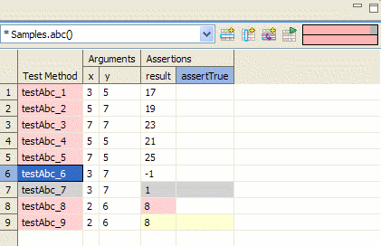
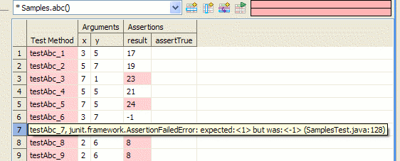

Invoking the Test Editor
Before invoking the Test Editor, you first need to generate your test classes. Right-Click on the project or the class and select CodePro Tools > Generate Test Cases. For more information, see the section on JUnit Test Case Generation.
The CodePro Test Editor is invoked by Right-clicking the test class and selecting Open With > CodePro Test Editor.

Test Editor Pane
By default the Test editor view preference is set to "split with source on left".
When you open a test class the source pane is on the left and the test
editor pane is one the right. You can change this setting in the
CodePro > JUnit > TestEdito preference page.

Here is a sample of a tabbed pane. You should see a two "notebook like" tabs at the bottom of the editor labeled Source and Tests. Click on the Tests tab to see the test methods in the Test Editor pane.

Test Editor Features and Functionalities
- Method List Combobox
Lists
all the testable methods. Selecting a method from the combo
box shows the corresponding testing methods in the Tests tab.

- Adding Tests ()
Test methods can be added through the test editor or by typing directly into the Java editor:
- To add a test method using the Test editor, click the Adds a Test Method
()
button or press Ctrl + Shift + N. A new test method is added to the list. Enter the necessary
arguments and assertions and save your work. The new test method
should now be
visible in the Java editor as well.
- You
can also add new test methods directly in the Java editor and it
will automatically appear in the Test editor after saving.

- Adding Assertions ()
Additional assertions can be added by either typing directly into the Java editor or by using the Test editor:
- To
add an assertion using the Test editor, click the Add an Assertion
(
) button or press Ctrl + Shift + A. A dialog appears which takes inputs
as they will appear in the source. Enter the necessary inputs and press OK.
- An empty column is now added to the grid which behaves like all the other columns.

- Duplicate Selected Row ()
To duplicate a row, select a row or a cell and click the Duplicate Selected Row ( ) button or press Ctrl+Shift+V. A new row is added with a different method name. This is an easy way of adding new tests.

- Refresh Tests (F5)
This function will re-run all the tests.
- Editing Tests
Test methods can be edited in the test editor or the Java editor. Changes
made through the Test editor are reflected in the Java editor and vice
versa.
- Deleting Tests
Deleting test methods in the Java editor will also delete it from the Test editor and vice versa.
- To delete a test method using the Test Editor, select the row and press the Delete key.
- You can also delete from the Java source editor and it will automatically reflect in the Test Editor.

- Color coding
The
Test editor dynamically runs the test whenever the argument or the
assertion is changed. The background color in the grid changes depending on the
test result.

- White - Passed.
- Gray - Dirty cells, save needs to occur for the test method to be run.
- Yellow - A failure occurred before the assertion was reached.
- Red - The assertion failed.
Note: Hovering your mouse over the text of the red cell will display the failure message.

To
find out more about a failed test, hover your mouse over the cell and a
description of the error in the form of a tooltip will appear.
Keyboard shortcuts
- F12 - Toggles between the Java editor and Test Editor pane if Test Editor preference is set to tabbed view.
- Esc - Deselects the cell .
- Tab - Move one cell to the right.
- Ctrl+Enter - Move one cell down.
- Ctrl+Shift+Enter - Move one cell up.
- Ctrl+Shift+V - Duplicate selected column.
- Ctrl + Shift + A - Add new column.
- Ctrl + Shift + N - Add new row.
- F5 - Refresh and rerun tests.
- Del - Delets the selected row or column